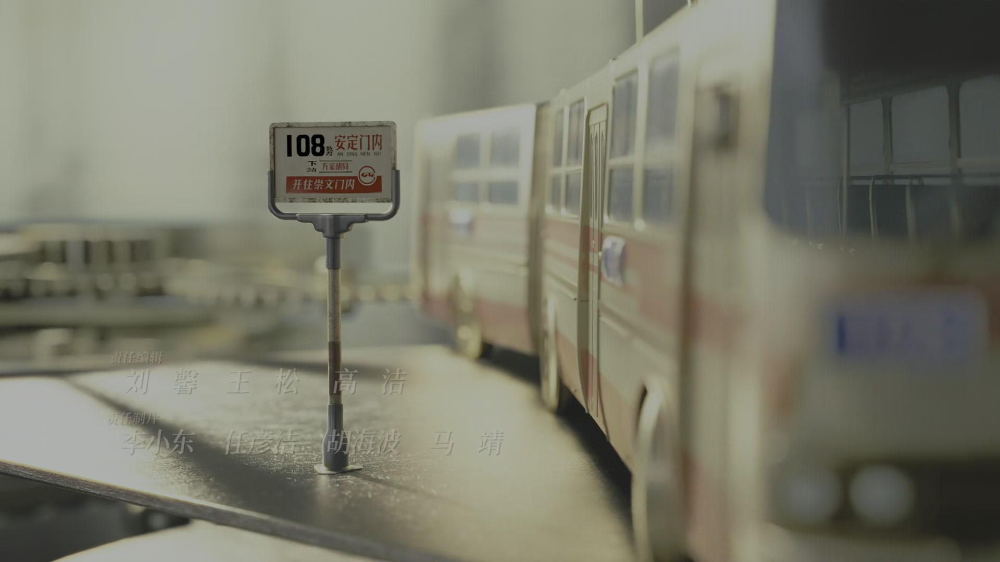
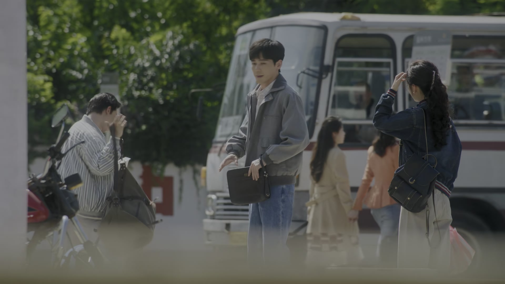
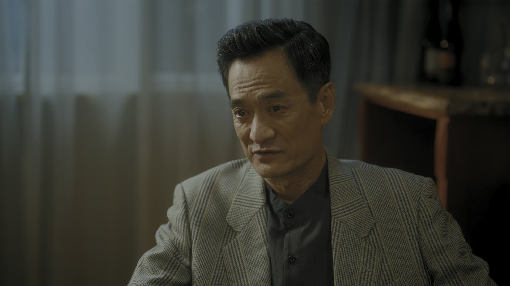
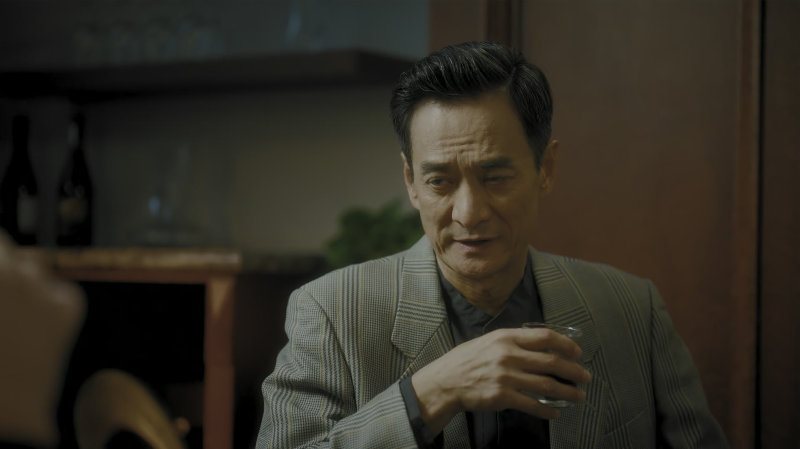
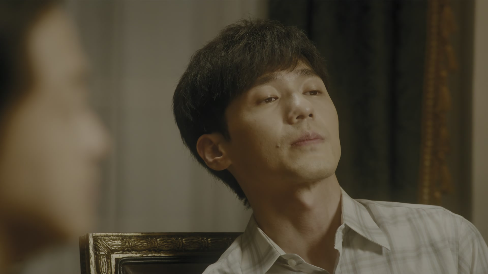
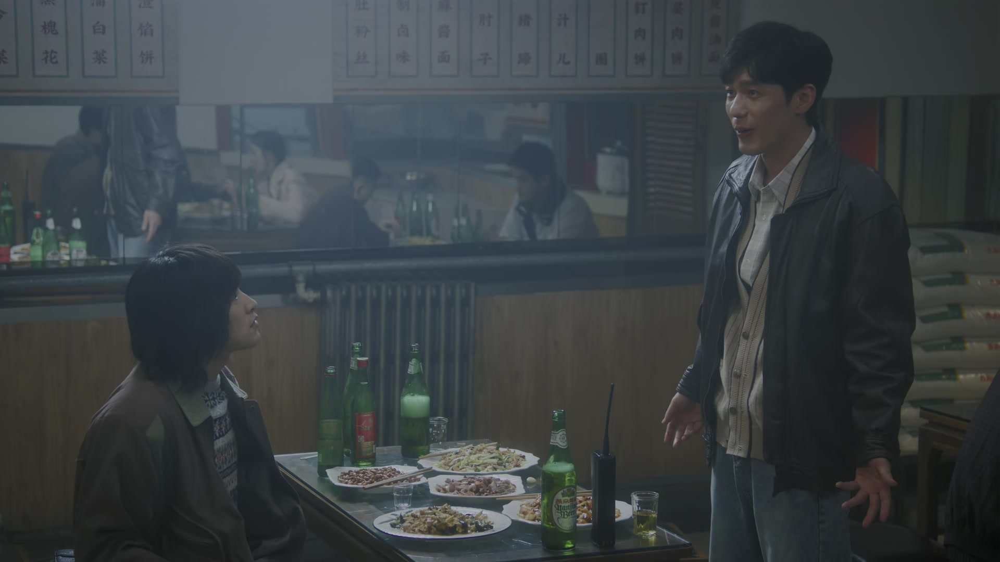
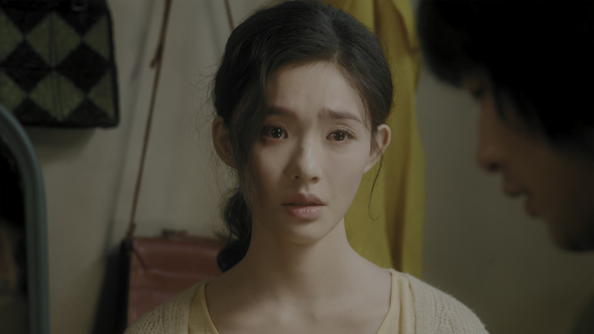
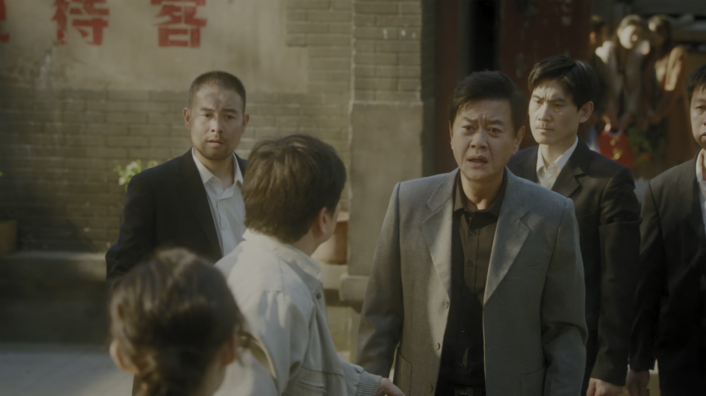

借钱的钱，先问来路
情境：段总借的五万块，背后站着楚财业。陶亮亮识破后宁可赔上生意也要还回去。
遇到这种情况，可以这样做
- 免费的午餐往往另有菜单，先弄清钱的来路再拿。
- 欠了谁的，迟早要还谁的——人情债最贵。

Drama Recap · 剧情图文总结
第 27 集 · 哈拉少，俄罗斯
庄庄到车站送徐胜利北上俄罗斯，叮嘱他照顾好自己；老伊万的皮子坐地起价，被徐胜利用一张走私底牌反制；段总的五万块钱背后竟站着楚财业，陶亮亮怒而翻脸；回京后他与沈冉冉把话说开，等来的却是“我怀孕了”。
庄庄把徐胜利送上北上的火车，一句“你要是倒了就没人照顾阿姨了”让车站的空气都变软了。莫斯科的生意场上，老伊万坐地起价，徐胜利用走私货的底牌逼他回到原价；陶亮亮借来五万块，却被好运哥点破那钱出自楚财业之手，兄弟当场反目。回京后冉冉告诉陶亮亮“我怀孕了”，一段感情走到最锋利的刀刃上。
庄庄赶来送行，徐胜利替叶叔叔带了话，庄庄也替他转达了对阿姨的问候。她把自己家里的吃食塞给徐胜利，两人在站台上郑重道别：照顾好自己，路上注意安全。火车启动，两个人在人生的轨道上各自向前。
剧里的鸡毛蒜皮，往往是人生的缩影。这些情节不只是故事——当你在现实中遇到同样的处境时，它们能提醒你：先做什么、别做什么、怎么说才有效。
情境：段总借的五万块，背后站着楚财业。陶亮亮识破后宁可赔上生意也要还回去。
情境：老伊万临时涨价，徐胜利摸清他走私的底细，用海关反将一军。
情境：陶亮亮追到街上，对怀孕的沈冉冉说：我能接受你的一切。
情境：沈冉冉拒绝陶亮亮追问楚老板的事，也不肯再回楚总身边。
情境：别的中国厂纸壳鞋砸了信誉，徐胜利他们的鞋却因为质量好被抢购。
情境：楚总听完“我要结婚了”，终于答应离开，只留下一句需要时打电话。

庄庄赶到车站，徐胜利刚跟叶叔叔通了话，回头看见她，又惊又喜。庄庄说妈妈让他带的东西，徐胜利说替她谢过阿姨，下个月还去看她。
站台上风很大，庄庄叮嘱他：你照顾阿姨，也要照顾好自己。你要是倒了，就没人照顾阿姨了。两人隔着人群挥手，火车鸣笛向北驶去。
关键台词 · KEY QUOTES

到了莫斯科，好运哥给陶亮亮恶补生意经：在俄罗斯做生意只需要两点，第一带个计算器，第二跟谁都说哈拉少。老伊万是当地皮料的大户，最好的皮衣皮鞋用的都是他家的皮。
老伊万亲自带着看货，水牛皮、黄牛皮一摞摞摊开，中文说得地道，还会说两句歇后语。徐胜利当场拍板：这个皮要两百张，水牛皮要一百张。第一单，眼看就要成了。
关键台词 · KEY QUOTES

订金三万、皮子一万，徐胜利和陶亮亮手头的钱不够。陶亮亮决定不花索菲亚那份钱，打电话找段总借。段总起初推脱，转头却应了下来，答应借五万，还叮嘱利息不用算，好好赚钱还上就行。
陶亮亮高兴得直拍胸脯，要打欠条，段总却说不用。挂了电话，段总却对一个朋友嘀咕：这小兄弟想一出是一出，还放话三年之内每个人必须赚五十万，靠谱吗？钱还是借了——借钱的电话，来得分外“巧”。
关键台词 · KEY QUOTES

电话那头的“老板”交代段总：今后在任何情况下，不要说这笔钱是我借的。段总满口答应，末了还是忍不住嘟囔：您非亲非故的，图一个啥呀？
这句话没说出口的那半句，是所有人都在赌的那份“好心”。借钱的盘子，比表面看起来要深得多。
关键台词 · KEY QUOTES

取货那天，老伊万突然翻脸：上等皮2.5美金一张，这个2美金，如今价格涨了好几倍，钱不够就带着钱再来。陶亮亮气得要报警，徐胜利却先冷静下来。
他打听明白：老伊万不是第一次干这种事，早年间吞并了好几家商户，仗着货多又有点背景，老干坐地起价，还常在货里夹带走私的东西。徐胜利反将一军：你有一批货要发去沈阳，经得起俄罗斯海关查吗？我今天要是走不了，你那批货可会被好好照顾。老伊万盯着他半晌，终于按原价成交。
关键台词 · KEY QUOTES

生意成了，三个人在餐馆摆庆功宴，段总也来了。酒过三巡，段总交底：哥今天给你交个实底，这钱不是我出的，是我一个好朋友特意委托我把钱给你们的。
段总起身带陶亮亮去见“大哥”。散场时好运哥盯着那辆开走的豪车，脸色骤变：你知不知道那是楚财业的钱！陶亮亮酒意全醒，当场翻脸：我活这么大，从来没有对不起兄弟过！他赌气要卖掉第一批货，把钱一分不少还回去。
关键台词 · KEY QUOTES

陶亮亮回到北京，把沈冉冉堵在屋里，把攒了许久的话全倒出来：我没变，我对你的感情没变。可沈冉冉说，是我变了，你也没变。
陶亮亮说他来北京最想干的事就是当演员，那是他最大的理想，他曾下过决心只要两人想的一样就一条路走到黑。沈冉冉打断他：我和楚老板的事你不可能一点感觉都没有，不要逼我在自己的伤口上撒盐。沉默许久，她一字一句：我怀孕了。
关键台词 · KEY QUOTES
沈冉冉说完“你走吧”就要离开，陶亮亮一路追到街上，把埋在心里的话彻底摊开：如果没有经历这些事，我跟你表白也许是脑子一热；但现在，我跟你说的每一句都是深思熟虑的。我已经错过你一次，不希望再错过你第二次。
他说，如果她要去流浪，他就满世界地找她，直到找到为止；他说在俄罗斯挣的钱全换成了给她买的戒指，只是一直没找到机会送出去。最后他停在路灯下，声音发抖：沈儿，我能接受你的一切，你愿意跟我在一起吗？
关键台词 · KEY QUOTES
莫斯科那边，生意越滚越大。索菲亚帮忙打开了销路，徐胜利回北京盯翁导那边，叶叔叔和庄庄在温州厂里守着订单。老伊万都服了软，市面上抢着买他们的鞋。
好运哥起哄：虽然这是老徐跟庄庄的夫妻店，但生意做大了，咱们可以在俄罗斯开个国际部！一桌人笑得前仰后合。好消息一个接一个，把俄罗斯的风雪都烘得暖了几分。
关键台词 · KEY QUOTES

楚总找上门来，陶亮亮守在门口寸步不让，两人动了手。沈冉冉冲出来护住陶亮亮，当面告诉楚总：我要结婚了。楚总怔住，问：你能确定，你要结婚的那个人比我更爱你吗？
沈冉冉说，我确定。楚总终于松口：如果我爱你已经成为了对你的一种骚扰，我答应你，我离开。但一个人在世面上，别受欺负、别受伤害，真需要我，就给我打个电话。他转身离开。旅馆深处却忽然传来惊呼：怎么了？你血怎么了？——有人吐血，众人慌乱地喊着叫救护车。
关键台词 · KEY QUOTES
北上俄罗斯谈下第一单，坐地起价时用走私底牌反制老伊万，回北京继续盯厂里的订单。
车站送别徐胜利，替他带话给阿姨，在温州与叶叔叔一同守着工厂开工。
向陶亮亮坦白“我怀孕了”，对楚总说出“我要结婚了”，终于把两段纠葛一并斩断。
借来五万块入伙，识破出资人是楚财业后当场翻脸；回京追着沈冉冉表白“我能接受你的一切”。
教陶亮亮“计算器加哈拉少”的生意经，也是第一个认出楚财业车的人。
受神秘老板委托出面借钱，叮嘱“任何情况下别说这钱是我借的”，庆功宴上被陶亮亮逼问出实底。
隐在幕后借钱给陶亮亮，被识破后上门找冉冉，最终在“我要结婚了”面前放手离开。
坐地起价的老手，常夹带走私货，被徐胜利用海关威胁后按原价成交。
庄庄把妈妈做的吃食塞给徐胜利，一句“你要是倒了就没人照顾阿姨了”把告别说出了分量的重量。
好运哥的莫斯科生存法则，三句话就把异国生意场的规矩讲得明明白白。
老伊万坐地起价，徐胜利一张走私单号逼得他当场服软，谈判戏看得人直呼过瘾。
好运哥认出那辆豪车时的一声惊喝，把借钱的温情撕成了阴谋。
陶亮亮追着沈冉冉到街上，从流浪说到戒指，最后颤声问出“我能接受你的一切”。
他借出五万、布置段总瞒天过海，表面放手背后仍有布置，这笔债不会轻易了结。
“我怀孕了”三个字既斩断旧情，也把这个孩子的来处和未来一并推向未知。
好运哥一句“开个国际部”的起哄，预示皮货生意将一路做大，牵动更多人和更多麻烦。
众人正为楚总离开松一口气，旅馆深处却传来吐血和救护车的惊叫，最坏的消息正在逼近。